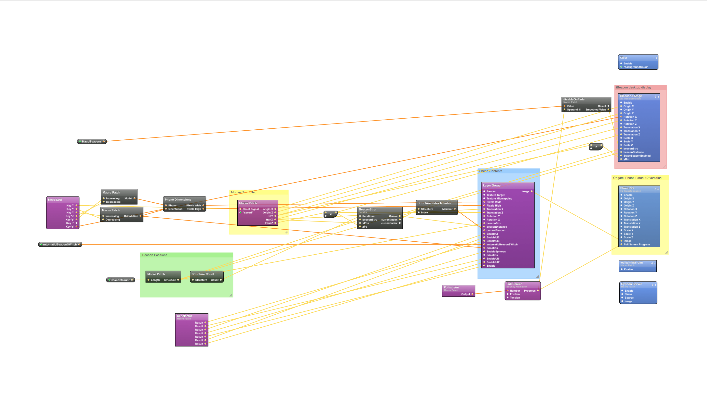

A Quartz Composer and Origami template composition to allow for UI creation and UX testing. Add as many beacons are require, position and color, each beacon communicates its ‘Near, Immermediate and Far’ signals. Core location data is used to calculate the angle of beacon
IMMERSE
Why did I Create this?
I was asked by an agency to work on a musem installation for a famous musican. 2 months in the project was hijacked by one of the sponsors. Sadly in that time I had finished a UX document and built an UI prototyping frame for iBeacons. Que Sera, Sera, their loss.
SOURCE
Open Sourced
The source files are published to GitHub so you can design your own UI’s.

OPEN SOURCED
Download the Build and Source Code
Run in Quartz Composer using Facebooks Origami addition
Requires OSX 10.8
Download the App
Download the App
Source Code
Source Code
Donate
11th Jan 2014
Released the source code to GitHub created website